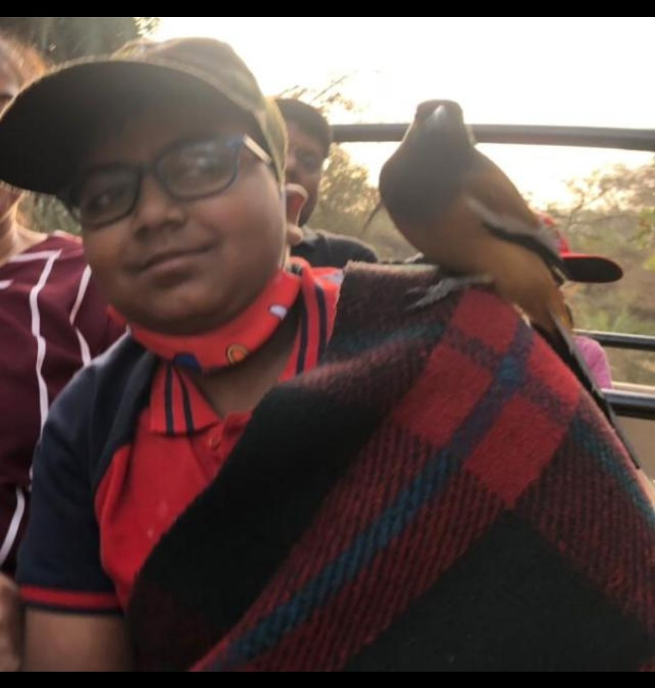

Rajasthan is a state in northern India. The state covers an area of 342,239 square kilometres or 10.4 percent of the total geographical area of India. It is the largest Indian state by area and the seventh largest by population. Some many famous cities are Jaipur,Jodhpur,Bikaner,Jaiselmer,Udaipur,Ranthambhore,churu,etc.There are some nicknames given to cities of Rajasthan like Jaipur is called Pink city,Jodhpur the Blue city,Jaiselmer the Golden City and Udaipur the white city and city of Lakes.I love Rajasthan because I love studying about the old kings and Rajputs there and the Ranthambhore National Park for the Tigers and Indian Leopard in which leopards are the rarest and I saw a leopard when i went there and a rufous treepie came and sat on my shoulders.I love Udaipur because of its scenery and beautiful lakes there and in Jaipur the Hawa Mahal,Jantar Mantar,Amber Palace are a few examples of places there.